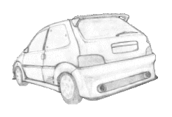

Citroen Saxo Appreciation Page
This page is under development! (Hence the lack of anything interesting to say...)
It is the place to where you will be able to find links to all the best sites on Citroen Saxos, particularly VTR's and VTS's.
If you have any links to recommend, e-mail me at MiniF1@MiniF1.co.uk
